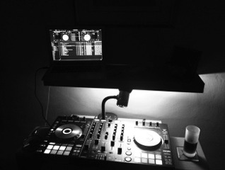

About me
Clubbed through the late 90's and early 00's, regularly danced the night away to the best trance music known to man in Ministry of Sound, Fredom@Bagleys, Peach@Camden Palace, Feersum@Crash, to name but a few. Bought my first set of Technicas 1210's around 2000 so that the nights didn't end when I got home. Now I'm the quintessential bedroom DJ, looking to play live by the end of 2013, but being the perfectionist, there's work to do. One of the first to own a Pioneer DDJ-SX and now spend half my life on it. I just love the music, though I try to play different genres, with the majority of my mixes being unprepared, and all of them mixed in real-time, with no editing or fixing.
I don't want to be famous, I just want people to enjoy the sets I put together, and I've built this site to keep a record of everything I do from now on, so download, listen, share and enjoy!
Si B
I don't want to be famous, I just want people to enjoy the sets I put together, and I've built this site to keep a record of everything I do from now on, so download, listen, share and enjoy!
Si B
|  | Hardware: | Pioneer DDJ-SX through MacBook Air Sennheiser HD-25 CII Professional Serato DJ |